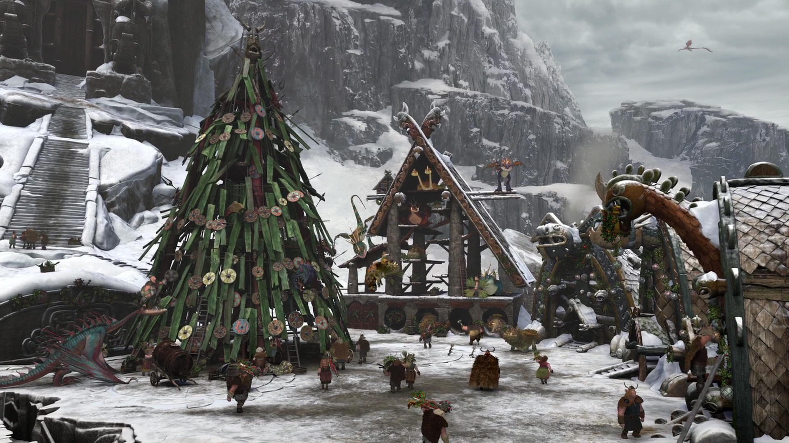
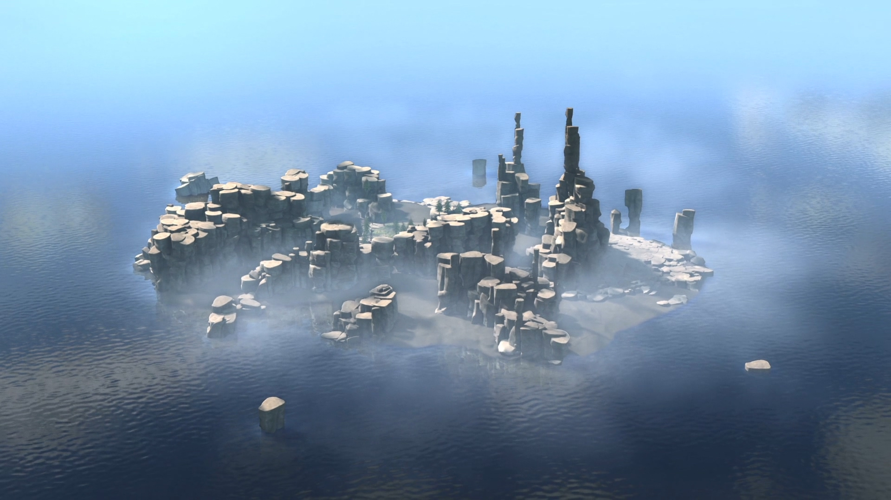
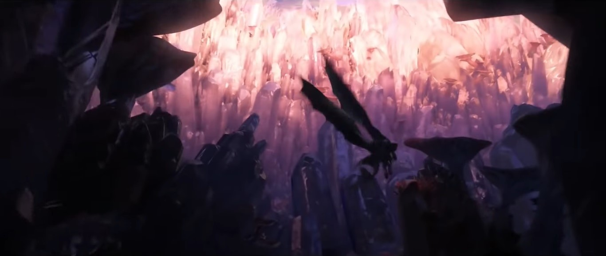

 博客岛这就是博克岛 从绝望之都向北十二天的路 但所有建筑都是新的 几乎到了极寒之地 我们捕鱼 打猎 还能欣赏美丽的夕阳 它就坐落在悲剧子午线上 唯一的麻烦就是害虫 我的村庄 一句话 很坚强 许多地方的害虫都是老鼠或蚊子 虽然只过了七代人的时间 而我们有…… ……龙。
无人居住而且寒冷，这个岛屿上毫无生机。岛上的雪幽
灵像雪崩般攻击那些擅自闯入的人，来守卫自己、守护
自己和龙之眼之间的神秘关联。雪幽灵象征着冬天，就像
夜煞象征着黑夜，它能感知到每一片雪花的飘落，能感
知每一座冰山的移动，能察觉哪怕最细微的温度变化。雪
幽灵是冰川岛的灵魂，也是无可争辩的拥有者。当寒风开始
怒号，也许只是天气的变化，但也可能是雪幽灵正悄悄走向它
的下一位受害者。
冰川岛

悦曲岛 阳光海岸。飞流瀑布。新鲜水果。悦曲岛为长途旅行、疲惫不堪的旅人
或龙族提供他们想要的一切——直到他们变成热带田园居住的捕食者的猎物。这个捕食者
就是死亡之歌。色彩斑斓、同类相食，死亡之歌用致命的催眠曲引诱其他龙来到悦曲岛
，然后捕捉那些不幸者，将它们困在坚硬的琥珀茧里，以便它稍后享用它们。当龙骑手
飞越边界时，他们必须克服引诱、远离死亡之歌、在变成这个岛屿迷人秘密的一部分前
逃离这里。 ——永远地。

隐秘之境是一个古老的传说，位于世界的边缘。在那里，很多水手的船只失事，永远
不会再被看到。那些回来的人说，那里是一个具有巨大的瀑布和龙族守卫的隐秘世
界的入口，一个所有龙族的圣地。
隐秘之境